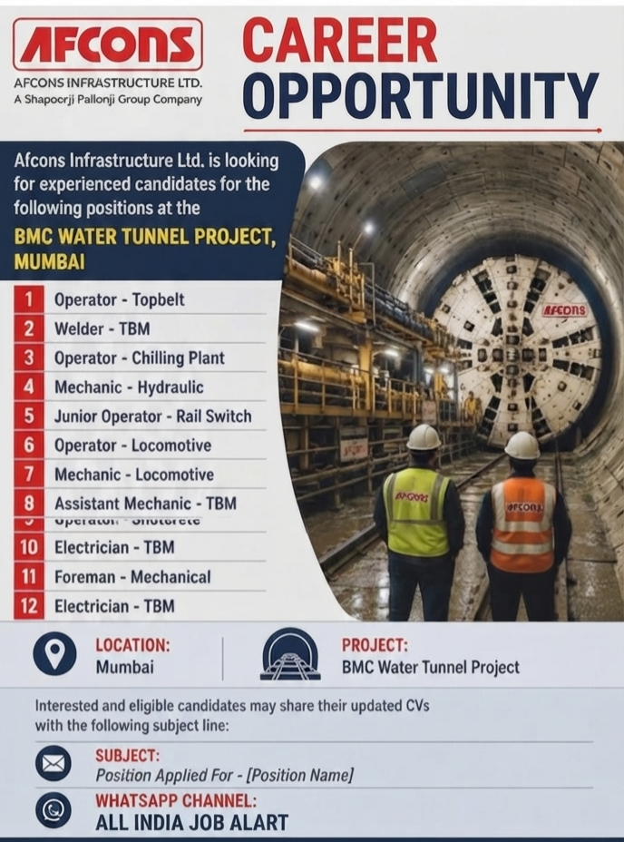

BMC Water Tunnel Project | Mumbai Jobs

Afcons Infrastructure Ltd has announced a new career opportunity for experienced and eligible candidates for its BMC Water Tunnel Project in Mumbai. This recruitment drive is a valuable opportunity for professionals who are interested in working on a major infrastructure and tunnelling project.
The company is looking for candidates across several technical and operational positions. Opportunities are available for professionals with experience in tunnel operations, TBM operations, mechanical maintenance, electrical work, rail systems and other related areas.
Candidates who have relevant qualifications and practical work experience may apply for the positions mentioned below. Applicants should carefully review the job requirements and send their updated CV through the official email address mentioned in the How to Apply section.
Get daily job updates, private company jobs, walk-in interviews and construction job vacancies.
Join All India Job AlertCompany: Afcons Infrastructure Ltd
Project: BMC Water Tunnel Project
Job Location: Mumbai
Industry: Infrastructure, Construction and Tunnelling
Afcons Infrastructure Ltd is looking for experienced candidates for the following positions:
This recruitment is especially suitable for candidates who have experience in infrastructure projects, underground construction, tunnel works, mechanical maintenance, electrical systems and heavy construction equipment.
Working on a major tunnel project can provide valuable exposure to large-scale infrastructure operations. Candidates with practical knowledge of machinery, construction safety procedures and project operations may find this opportunity beneficial for their career growth.
Applicants should ensure that their resume clearly mentions their current position, total work experience, technical skills, educational qualification and previous project experience. Candidates with experience in tunnelling or TBM-related projects should mention this information prominently in their CV.
Candidates with relevant technical qualifications and experience may apply. The eligibility requirement may differ according to the position. Applicants should have appropriate experience related to the job role for which they are applying.
Technical candidates from mechanical, electrical, construction and infrastructure backgrounds may find suitable opportunities depending on their work experience and skills.
Candidates are advised to apply only for positions that match their qualification and professional experience. Providing clear and accurate information in the resume can help the recruitment team understand the candidate's profile more effectively.
Join our WhatsApp Channel for latest job vacancies and walk-in interview updates from across India.
Join WhatsApp Channel NowInterested and eligible candidates may share their updated CV with the following subject line:
Subject: Position Applied For – [Position Name]
Email:
singh.sandeep@afcons.com
For example, if you are applying for the Welder - TBM position, you may write the subject line as:
Position Applied For – Welder - TBM
Before sending your application, carefully update your resume with your latest employment information. Mention your current company, current designation, total years of experience and technical skills.
Candidates should also mention their experience in infrastructure, construction, tunnelling, TBM operations, mechanical maintenance or electrical systems wherever applicable. A properly prepared CV can make it easier for recruiters to understand your experience.
Use a professional email address while applying for the position. Make sure that your mobile number is active and clearly mentioned in your resume so that recruiters can contact you if your profile is shortlisted.
Applicants should avoid sending incomplete resumes. Include your education, previous employment details, major skills and relevant project experience. If you have worked on a major infrastructure project, mention the project name and your responsibilities.
Large infrastructure projects offer an opportunity to gain practical experience with complex construction systems and advanced machinery. Tunnel and water infrastructure projects often involve specialised operations and require skilled technical professionals.
Working in such projects can help professionals improve their knowledge of construction operations, mechanical equipment, electrical systems, safety practices and project coordination. These skills can be valuable for future opportunities in the infrastructure and construction industry.
Candidates who are interested in long-term career growth in construction and infrastructure should continue developing their technical knowledge and practical skills. Experience on large projects can strengthen a professional resume and provide exposure to new working methods and technologies.
Check more employment opportunities and recruitment updates through our job information platform and WhatsApp channel.
Join All India Job Alert WhatsApp Channel and receive regular updates about private jobs, construction jobs and walk-in interviews.
JOIN ALL INDIA JOB ALERTThe Afcons Infrastructure Ltd recruitment opportunity for the BMC Water Tunnel Project in Mumbai may be a useful option for experienced candidates looking for jobs in infrastructure and tunnelling projects. Multiple positions are available across operational, mechanical and electrical job categories.
Interested candidates should carefully select the position that matches their skills and experience and send their updated resume with the correct email subject line. Ensure that your CV contains accurate information and relevant project experience.
Keep checking the All India Job Alert WhatsApp Channel for more job notifications, private company recruitment news and walk-in interview updates from different locations across India.